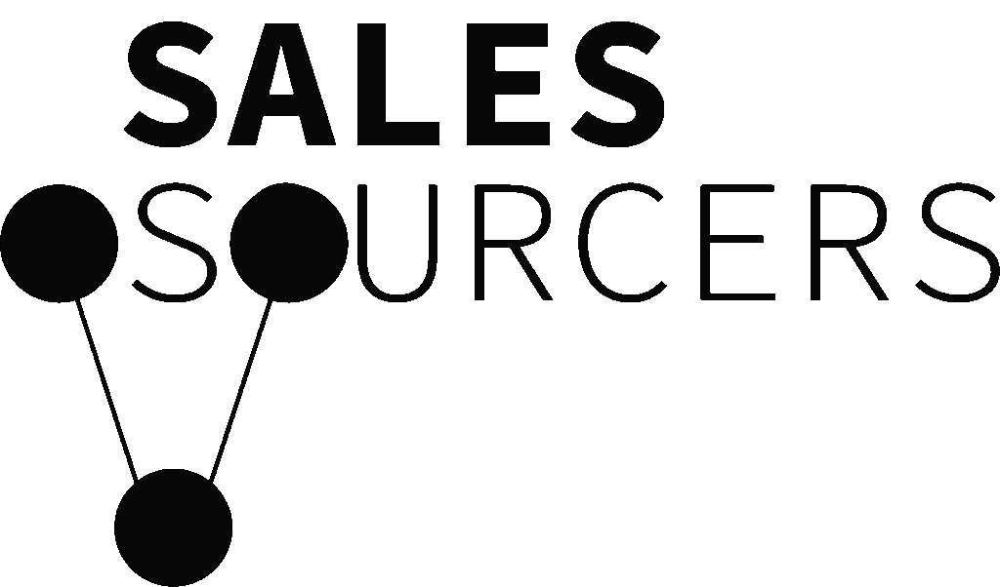

TARGETINGYou cannot control which opportunities arrive.
Inbound and referrals bring whoever happens to find you. They do not let you deliberately pursue the accounts that pay more, retain longer or best match your growth plan.

Schedule a call ->We combine experienced, market-aligned SDRs, buyer-intent data and multi-channel execution to book qualified sales meetings your team can actually close.
$4M+ revenue generated for B2B companies in 2025
Inbound and referrals bring whoever happens to find you. They do not let you deliberately pursue the accounts that pay more, retain longer or best match your growth plan.
Inbound and referrals cannot be increased when the forecast falls short. Outbound gives you controllable activity, measurable conversion points and a clearer route to more conversations.
Hiring the right SDR is only the start. They still need data, tools, training, oversight and expert coaching. A poor hire can cost months before leadership inherits prospecting again.
One managed team owns the journey from market selection to a qualified meeting in your calendar, with every conversation feeding the next decision.
We turn your best customers, commercial goals and offer into a clear addressable market. That gives the campaign firm boundaries before a single lead is contacted.
AI analyses every SDR call and email response, including who replied, their role, region, timing, objections, competitor mentions and buying context. Your dashboard turns that activity into evidence about which markets, messages and buyers are most likely to convert.
Meetings, opportunities, pipeline and closed revenue update against your existing CRM.
Live attributionAcross 22 conversations
Most mentioned: incumbent agencyAlready have someone in-house
Best response: capacity gapBudget and pricing discussions
Mid-market buyers show strongest fitCalls that connected the offer to missed pipeline converted 2.3x better than capability-led pitches.
Applied to next coaching session3.2x higher meeting rate than broad account targeting.
Source verified · 42 accountsFilter by company type to see what SalesSourcers has delivered for teams facing a similar growth challenge.
Short, unpolished accounts of what changed after SalesSourcers became their outbound partner.
We hire experienced, market-aligned talent across the UK, South Africa, the US and Australia, then support them with management, coaching, competition and AI call analysis.
We select sellers with real phone experience, commercial judgment and the confidence to represent your brand.
We match you with SDRs whose previous experience, market familiarity and working hours fit the buyers they will call.
Managers review calls three times a week while AI surfaces objections, missed opportunities and specific coaching points.
Strong earning potential, team accountability and quarterly competitions create the energy of a focused sales floor.
By week three, your trained SDR is speaking to the market and qualified sales meetings can begin landing in your calendar.
We audit your market, offer, historical performance and sales process. Then define the commercial target.
Strategy & market mapWe build the data, scripts and infrastructure, then train your dedicated SDR on your offer, buyers and objections.
Campaign + SDR readyCalling and email begin. Replies are handled, prospects are qualified and sales meetings are booked into your calendar.
First meetingsWeekly insight improves targeting, messages and sales handoff. The system gets sharper every cycle.
Optimisation & scaleHiring one rep is only the beginning. The real cost includes recruitment, management, tools, data, training and the risk of starting again when someone leaves.
Benchmarked against RepVue, BLS employer cost data and Bridge Group SDR research. Ranges vary by market and coverage.
A global outbound team across the UK, South Africa, US and Australia, with flexible coverage for new markets, extra meeting capacity and complex sales motions.
Add personalised email coverage around the same accounts your SDR is calling.
Turn every call and reply into decisions your commercial team can use.
We will prepare a concise, three-page outbound opportunity map for your business. It is useful whether you partner with us or run the strategy internally.
SalesSourcers started when a family friend asked Zane for help generating sales meetings. The first cold email campaign booked 23 meetings in three months. One question followed: why not do this for other businesses?
Zane had worked from SDR to Account Executive, SDR Manager and Sales Manager, selling and closing millions in revenue. Zaid brought consulting, operations and automation experience from organisations including Accenture, AXA and Zurich.
Today, SalesSourcers remains family owned. Zane leads commercial growth. Zaid runs delivery, operations, finance and HR. Their names are similar; their responsibilities are not.
Strategy, operations, coaching and client delivery have named owners who remain involved throughout the campaign.
CFO, Finance & Strategy
Financial strategy, commercial planning and long-term growth.Work with experienced managers, structured coaching and real campaign data. We are preparing our next hiring round across three key markets.
Based in the United States or able to work consistently across US business hours.
Based in the United Kingdom or able to work consistently across UK business hours.
Based in Australia or able to work consistently across Australian business hours.
Still deciding? Bring the hard questions to a strategy call. We will tell you plainly whether we can help.
Every lead is vetted against fit, intent and timing before outreach begins. Your dedicated, market-aligned SDR completes a proven training programme covering discovery, SPIN Selling and Gap Selling, then works across cold calling and personalised email. You also receive full call visibility, AI notes, manager coaching three times a week and qualified meetings from as early as week three.
Most campaigns go live in week three, after strategy, infrastructure and SDR training are complete. Qualified meetings can begin from launch, while performance becomes more predictable as real market feedback improves the campaign.
Before launch, we interview your team, study your offer, review customer calls and materials, build the sales playbook and train your SDR on your market. Scripts are tested through role play, call listening and live coaching. Your team approves the positioning, and recordings plus email replies keep quality visible.
They are not handed a script and sent to the phones. Your SDR is trained on the problem you solve, the buyers who experience it, your proof, qualification criteria and common objections. Managers coach them three times each week, listen to calls and use AI analysis to identify where product knowledge or discovery needs to improve.
We set expected meeting ranges based on market size, offer strength and historical data. We do not make artificial guarantees that reward low-quality bookings. Qualification and commercial relevance come first.
Give us strong product context, timely feedback and the capacity to run good discovery calls. We handle prospecting and meeting creation; your closers focus on turning qualified conversations into revenue.
Schedule a no-pressure call. We will assess your market, current sales motion and whether SalesSourcers is the right outbound partner.
Schedule a call -> 30 minutes · Clear next steps · No generic pitch